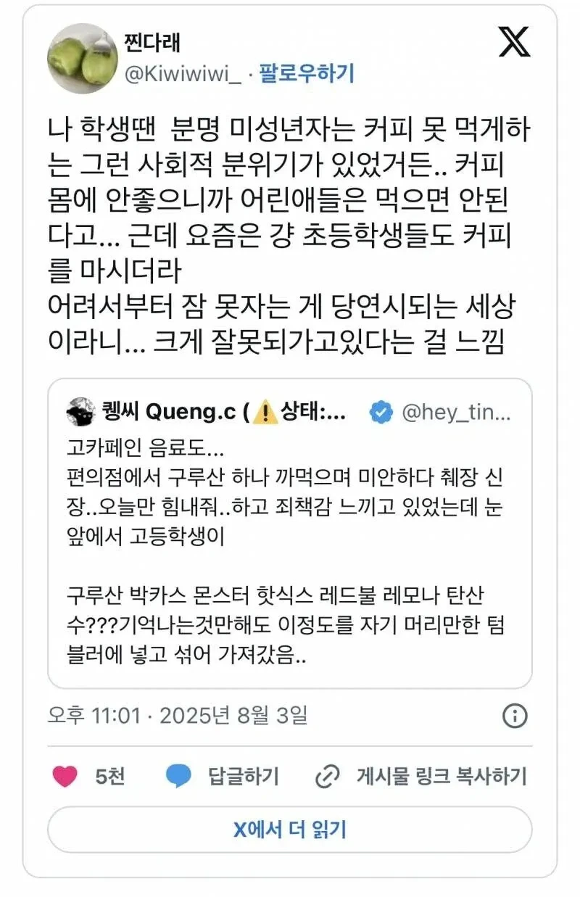
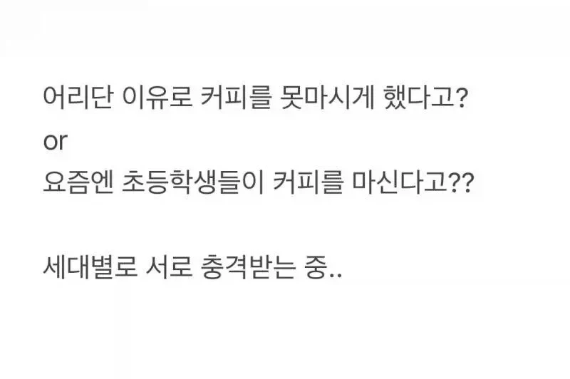

나도들음ㅋㅋ그래서 우유하고 같이먹으면 녹으면서 다시 자라지 않나? 하고 따졌다가 쳐맞음
고등학생때 첫여친사귀고 처음 카페가봤던것 같은데
커피는 무슨 더위사냥도 안사줬다 ㅋㅋㅋ
그러네 ㅋㅋㅋㅋㅋㅋㅋ
어릴때 못먹게해서 지금도 커피안마심 휴 ~
카페인에 민감한 사람 많구나 난 잠 잘자는데 다행이다
원래 카페인은 각성제야..잠잘자는 사람이 특이한거임
나도 하루 7~8잔 마셔도 바닥에 엎드리면 바로 잠들었는데 요즘은 3잔 정도만 마심
잘 자는 게 아님
수면 트래킹 해 보면 엄청 차이남
난 더위사냥 아니면 커피 안먹어
커피말고도 시험기간에 카페인 타우린 음료 마실텐데 뭐
어려서 카페인 먹어봐야 좋을거 뭐라고
카페인도 부작용 있어
자율신경계에 부담주는건데 아직 2차성징도 안온 애들한테 그런거 먹이면 어떻게 되겠냐고
카페인이 맨날마시니까.,. 피곤함, 그냥 안마시는게 맞음
어릴때 못먹게해서 그런가... 커피를 거의 물처럼 먹고사는데.. 매일 아메리카노 대여섯잔씩 마시는듯 덕분에 주말에 하루나 이틀정도 안마시면 두통옴 시발
자꾸 그러면 평일에도 두통온다...
어지간하면 줄여..
술도 안하고 담배도 안하는데 거 커피좀 때려 넣을 수 있는거 아닙니까 ㅠㅠ
그거 카페인 금단현상임..그거 못참고 계속 마시는게 카페인 중독
초중딩 때는 잘안줬던 것 같긴해
커피마시면 뼈녹는다고 하셔서 훈련병때 자판기 커피 첨 먹어봄
초딩때 엄마가 커피믹스에 에이스 과자 찍어먹던게 얼마나 맛있어 보였던지
더 커서 커피 마시라던게 기억 나는데 요즘은 그렇구나
어릴때 맥이면 잠못자서 엄마아빠한테 가서 앵기고 못자게하고 귀찮게 뒤척이니까 그냥 못먹게해버림
나도 미성년자때는 부모님이 커피 못마시게 해서 성인되자마자 한 행동이 스타벅스에서 아메리카노 사마시기였는데 ㅋㅋㅋㅋㅋㅋㅋㅋ
성장기에 카페인 섭취하면 뇌 발달에 문제 생길 수 있단 말을 들었는데ㅠ
키 안클까봐 못먹게 한거 아님? 그래서 일부러 참았는데
술담배커피 성장 끝나고 노화 시작하는 25세 이후로 먹는게 맞는거같긴함
나도 고등학생 되고나서 먹어본듯?
성장판 열려있는데 잠 안자는거 존나 아까운건데 하....
대치동 등에서는 맘들이 중학교까지 식단 관리하는 곳도 있더라
제자들 밥 한번 사주려니까 먹지 못하는 음식 줄줄히 적어 보냈음 ㅋㅋ
카페인 먹으면 뇌 변형됨. 뇌손상이나 치매 그런건 아닌데 약 기운에 떠밀려서 부스트 되기 때문인지 말 실수를 포함해서 여러가지 잔실수가 많아지고 생각을 폭 넓게 못 하는 느낌이 있음. 특히 여자한테서 그런 경향이 두드러지게 느껴지더라. 실제로 뇌 기능 영역 중 일부 기능을 강화시키지는 동시에 다른 영역을 약화시킨다는 내용을 생각해보면 결코 좋은 성분은 아님. 성인들조차 이런데 골고루 발달해야 할 어린 시기에 카페인에 젖어 살면 당연히 안 좋음. 그리고 잠재되어 있는 공격성이나 충동성, 긴장감 등을 자극하기 때문에 정신건강에 있어서도 좋지 않음. 여기에 더해서 수면방해나 체내 영양소 고갈, 치아 변색, 소화기 질환, 기타 등등 이런 것까지 딸려오면 득보다 실이 더 많은듯. 커뮤에서 별 것도 아닌거 가지고 지들끼리 맨날 개지랄나는 것도 정상이 아닌데 기본적으로 병신들이 많은 탓도 있지만 카페인 영향도 크다고 지레짐작함
인식이 어쨌든 의학적으로 청소년은 커피 안 마시는 게 제일 좋다는 사실은 변하지 않음. 마셔도 최대 1잔
어렸을땐 맛없었어
뼈녹는단 말은 나만 듣고 컸나?